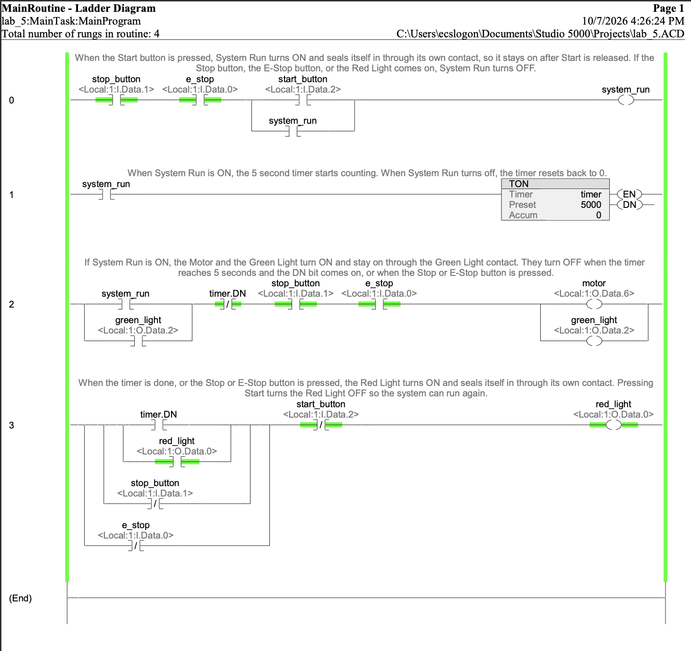
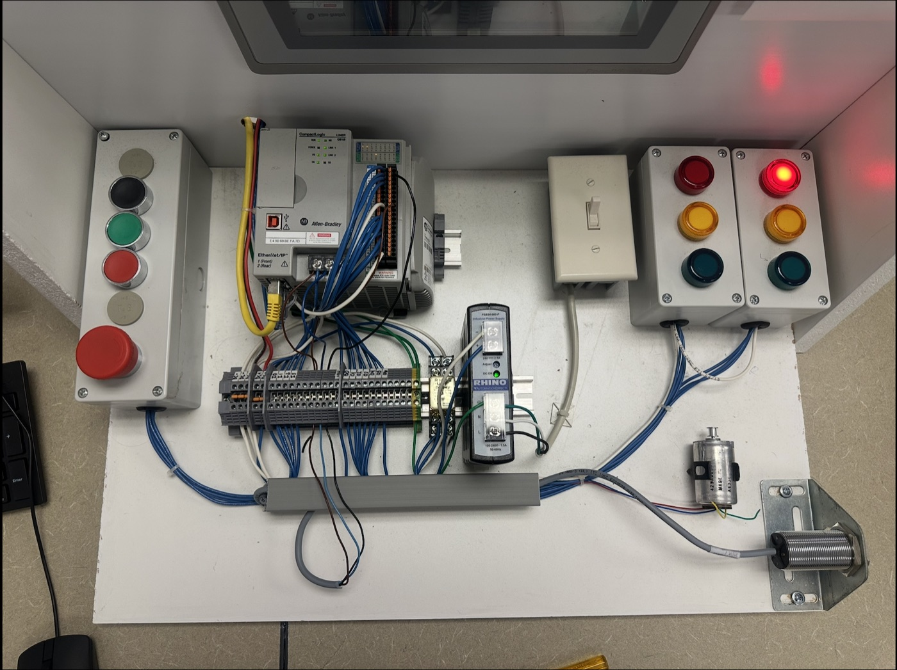

CompactLogix Timed Motor Control
Pressing Start runs a 24 VDC motor and a green light for 5 seconds with a TON timer, then stops them and latches a red light. Stop or E-Stop during operation does the same immediately. Programmed in Studio 5000 and tested on a physical lab station.
I/O map
| Device | Address |
|---|---|
| Start button (N.O.) | Local:1:I.Data.2 |
| Stop button (N.C.) | Local:1:I.Data.1 |
| E-Stop (N.C.) | Local:1:I.Data.0 |
| Motor | Local:1:O.Data.6 |
| Green light | Local:1:O.Data.2 |
| Red light | Local:1:O.Data.0 |
Logic highlights
- Rung 0: Seals in
system_runfrom Start. N.C. Stop and E-Stop are examined with XIC, so a broken wire stops the machine. - Rung 1: Runs the TON (5000 ms) while
system_runis on. - Rung 2: Runs the motor and green light until
timer.DN, with Stop and E-Stop in series. - Rung 3: Latches the red light on
timer.DN, Stop, or E-Stop. Start clears it.
Debugging on hardware
The first version sealed in the motor rung with no stop conditions of its own. Pressing Stop dropped system_run, which reset the timer and cleared DN. The XIO DN contact went true again, and the seal-in held the motor on with nothing to turn it off.
Lesson: a TON's DN bit doesn't remember that the timer finished, so a seal-in needs its own stop conditions.
Safety note
On production equipment the E-Stop is hardwired through a safety relay so it removes power independently of the PLC (NFPA 79 / ISO 13850). On this training station it is a PLC input.
Planned improvements
- Automatic re-arm after timeout: add XIO
red_lightto thesystem_runrung so Start alone begins a new cycle. - Red light only for a stop during operation: move the red-light rung above the
system_runrung, so it readssystem_runin the same scan before it drops.
Screenshots



